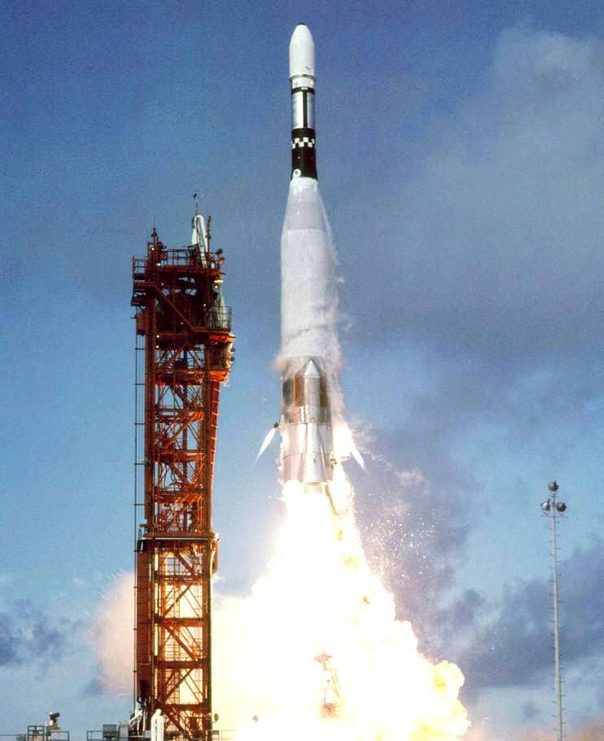
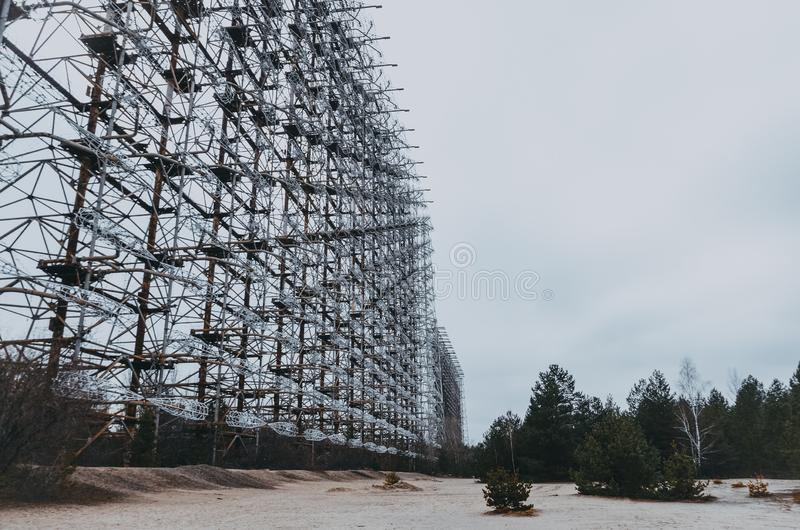
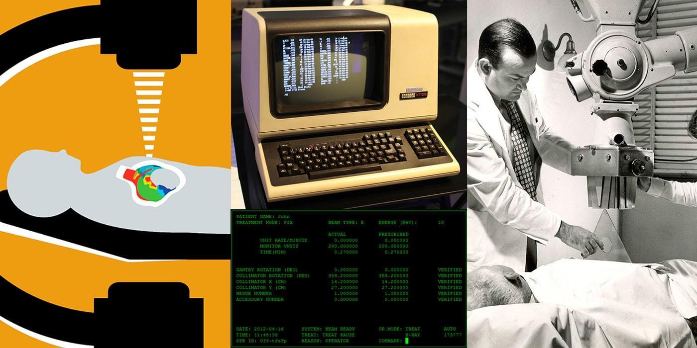
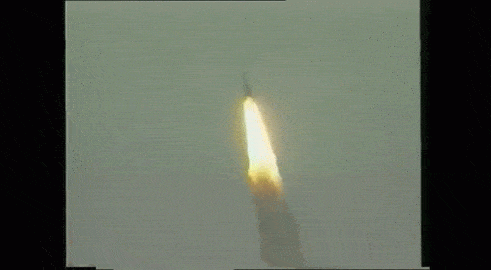
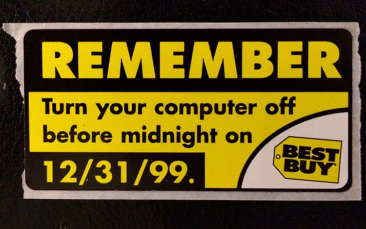

Bugs HistóricosNão é de hoje que temos contato com diversos programas que ocorrem diversos bugs, porém, nessa lista você verá aqueles que marcaram história de tão significantes que foram na época. Mariner I (1962)

O Mariner I foi a primeira nave espacial do Programa Mariner, que tinha a missão de observar o planeta Vênus. Porém, devido a um erro de cálculo (apenas um HÍFEN) ele desviou a sua rota e foi destruido 4 minutos após seu lançamento, ocasionando em um prejuízo de US$ 18,5 milhões ou R$ 91,03 milhões(maio/2023) Quase a 3° Guerra Mundial (1983)

Em 1983, um pequeno bug quase ocasionou em uma catástrofe em escala global no qual, os softwares de detecção anti-míssil da União Soviética sofreram falhas, detectando os reflexos dos raios solares como falsos mísseis. Desta forma, havia todos os dados possíveis para concluir que seria um ataque dos EUA, porém um oficial soviético desconfiou do alerta e não reportou aos seus superiores, previnindo uma catástrofe. Therec-25 (1985- 1987)

Os bugs não afetam a vida apenas indiretamente através de problemas militares, um claro exemplo disso foi no ano de 1985, no qual o erro "Condição de disputa de SO" ocasionou em um problema médico gravíssimo em diversos pacientes devido a alta liberação de doses letais de radiação na máquina de radioterapia controlada por computador. Mísseis Patriot (1981)
Em 1981 durante a Guerra do Golfo, uma falha no arredondamento no software em calcular um certo tempo ocasionou em 28 mortes e 100 feridos, no qual um sistema de mísseis americano falhou em interceptar outro míssil vindo do Iraque, acertando acidentalmente um acampamento de soldados americanos. Ariane 5(1996)

Esse bug foi caracterizado por outro erro em projetos envolvendo foguetes, porém diferente do anterior, este se caracteriza pelo bug no software que ocasionou em cálculos errados com números mais longos do que eram capaz de suportar. Desta forma, tal bug ocasionou um um prejuizo de cerca de US$ 370 milhões ou R$ 1.820.617 bilhão(maior/2023) devido ao fato do foguete explodir 39 segundos após seu lançamento. Bug do Milênio (1999 - 2000)

O Bug do Milênio, um dos bugs mais famosos devido a importante data de virada de século, momento este marcada pelo caos da preocupação com os softwares considerarem como ano 1900, pois apenas eram desenvolvidos para pouparem armazenamento, sendo capazes de armazenarem apenas anos para datas de dois dígitos, como 99 para 1999. |